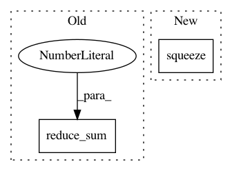

91db14020567987d8cda29a6140825c888e84917,thumt/data/record.py,,get_input_features,#Any#Any#Any#,105
Before Change
)
),
"target_length": tf.to_int32(
tf.reduce_sum(
tf.to_float(tf.not_equal(feature_map["targets"], 0)),
axis=1
)
),
}
return features
After Change
"source": feature_map["source"],
"target": feature_map["target"],
"source_length": tf.squeeze(feature_map["source_length"], axis=1),
"target_length": tf.squeeze(feature_map["target_length"], axis=1)
}
return features
In pattern: SUPERPATTERN
Frequency: 4
Non-data size: 2
Instances
Project Name: THUNLP-MT/THUMT
Commit Name: 91db14020567987d8cda29a6140825c888e84917
Time: 2017-11-24
Author: playinf@stu.xmu.edu.cn
File Name: thumt/data/record.py
Class Name:
Method Name: get_input_features
Project Name: freelunchtheorem/Conditional_Density_Estimation
Commit Name: f4c45be6554d717714d6ff5e67ab51bc4ea2e864
Time: 2019-05-02
Author: simonboehm@mailbox.org
File Name: cde/density_estimator/NF.py
Class Name: NormalizingFlowEstimator
Method Name: _build_model
Project Name: reinforceio/tensorforce
Commit Name: 6c5de2997ab023a3e64b9097cded65f6135de0a7
Time: 2016-11-13
Author: mi.schaarschmidt@gmail.com
File Name: tensorforce/value_functions/deep_q_network.py
Class Name: DeepQNetwork
Method Name: create_training_operations
Project Name: tensorflow/models
Commit Name: b5afddbefe9d27d368ace5ed9430290d9be41d8e
Time: 2017-06-14
Author: rsepassi@google.com
File Name: adversarial_text/adversarial_losses.py
Class Name:
Method Name: _kl_divergence_with_logits